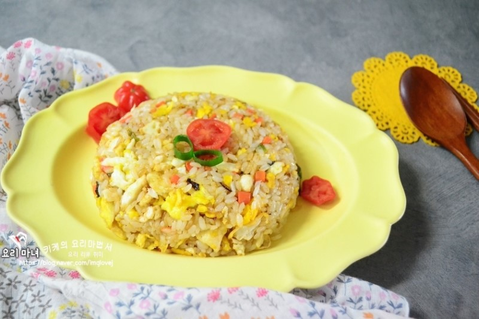

China Food Menu
중국식 볶음밥

재료 : 새우 1줌, 파 ,당근 조금, 부추 1줌, 계란 2개, 식용유 , 밥 2공기 , 간장 3스푼
①볶음밥에 들어갈 재료들이에요. 야채는 작게 잘라서 준비해요. 새우는 물에 한번 씻어서 물기를 빼서 준비해요.
②식용유를 두른 팬에 파를 먼저 볶아주세요.
③파를 볶고 다진야채,새우를 넣고 한번 볶아주세요.
④풀어 둔 계란도 넣어주세요.
⑤계란을 넣고 잘 섞어가면서 야채들이랑 어우러 지도록 볶아주세요. 고소한 향이 퍼지네요.
⑥간장을 3스푼정도 넣고 한번 더 볶아주세요.밥을 넣고 밥이랑 볶음밥 재료들이랑 잘 섞이도록 볶아주세요.
Mascot

Social Network Service